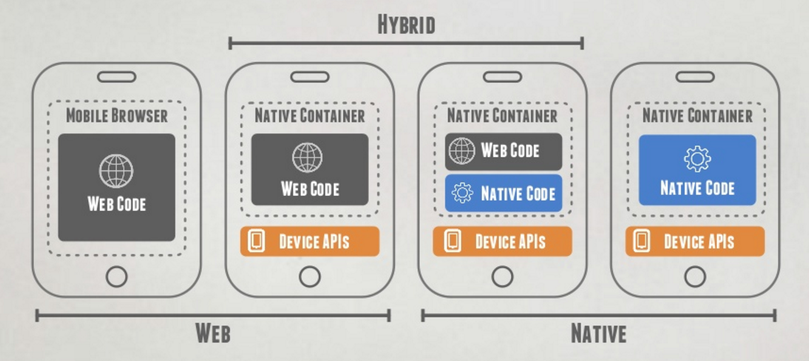
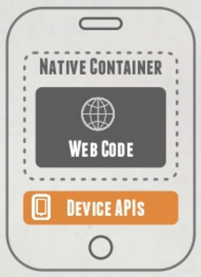
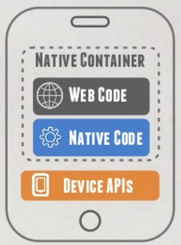

Mobilappar
Native, Mobil webb eller Hybrid?
Presenterat av Erik Tufvesson, Presis i Lund AB
Kort om mig
Erik Tufvesson
Systemarkitekt och utvecklare på Presis!
Brinner för utveckling av mobilappar!
Vad ska jag prata om idag?
- Mobilappar:
Alternativ, skillnader och likheter
- Vad passar bäst i olika situationer?
- Demo
- Framtiden
Vilka alternativ finns det?

Vad är en Native-app?
- Byggd för en specifik plattform
(iOS, Android, Windows Phone)
- Full tillgång till mobilens hård- och mjukvara
(Kamera, GPS, kontaktlista, säkerhetsgränssnitt, notifieringar, kalender etc.)
- Hög prestanda och häftig grafik
- Dyr och tidskrävande att utveckla och underhålla
Vad innebär Mobil webb?
- En mobilanpassad webbsida som visas i mobilens webbläsare
- Ingen tillgång till mobilens hård- eller mjukvara
- Låg prestanda
- Billig att utveckla och enkel att underhålla
Vad är en Hybridapp?
- Kombination av HTML- och Native-element
- Samma kodbas för samtliga plattformar!
- Snyggt paketerad
- Distribueras via App Store/Google play
- Tillgång till mobilens hård- och mjukvara
- Bra prestanda
- Billig att utveckla och enkel att underhålla
Så vad ska man välja?
Scenario:
"Jag vill ha en ashäftig app med cool grafik och superprestanda!"
Native
Scenario:
"Jag vill göra innehållet på vår webbsida mer tillgängligt på mobilen."
Mobil webb
Scenario:
"Jag har en cool idé på en mobilapp som jag vill testa snabbt och enkelt!"
Hybrid
Scenario:
"Vi vill kunna använda vårt affärssystem på mobilen och surfplattan!"
Hybrid
Scenario:
"Vi har en mobilanpassad webbutik, men våra kunder efterfrågar en app!"
Hybrid
Scenario:
"Jag vill snabbt och enkelt ta fram en mobilapp som ska fungera till så många användare som möjligt!"
Hybrid
Måste man välja en och sedan hålla fast vid det valet?
Nej!
Exempel:
PoC
Bygg en hybridapp som ett Proof of Concept för att senare konvertera till Native
Hur fungerar egentligen en Hybridapp?

Alternativ 1
- WebView (Native container)
- HTML, CSS och Javascript
- Plugins till native-API:er
- Exempel: Cordova, PhoneGap, Ionic, Sencha

Alternativ 2
- Native-element
- CSS för formattering
- Javascript för logik
- Direkt åtkomst till native-API:er
- Exempel: NativeScript, React Native, Appcelerator
Demo!
Kan jag konvertera min befintliga mobila webbsida till en hybridapp?
Ja
Hybrid + Mobil webb = sant
- Bygg en hybridapp
- Använd exakt samma kod för din mobila webb
Win!
"Add to HomeScreen"
Lägg till en mobil webbsida som en app på telefonens startskärm.
- Fungerar till Safari för iOS och Chrome för Android
- Utvecklaren av webbsidan lägger till meta-information (manifest-fil/meta-taggar)
- Användaren väljer att lägga till appen på sin hemskärm
- Appen är nu åtkomlig direkt från enhetens hemskärm
Vem satsar på hybridappar?
Hur ser framtiden för mobilappar ut?
Områden i fokus
- Cross Platform
- IoT
- Rapid Development
- Enterprise Apps
Intresserad av att utveckla en mobilapp?
Kom till oss på Presis!